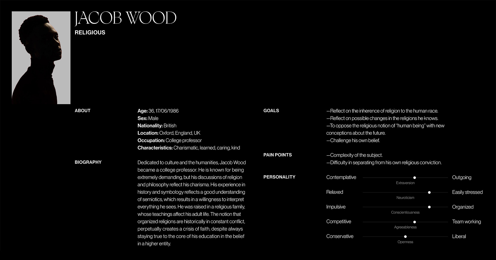
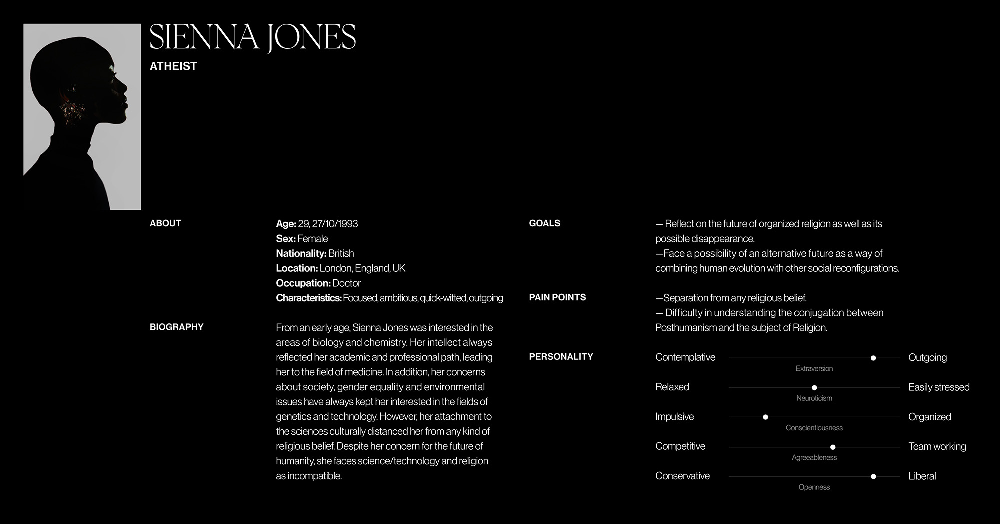
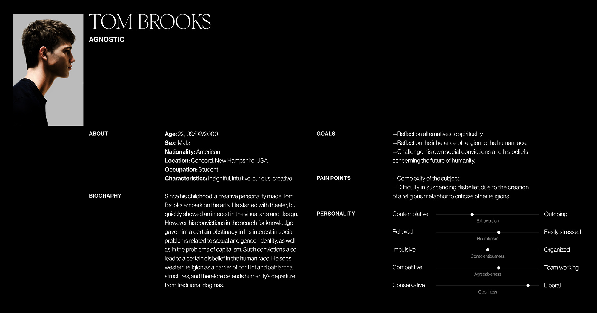
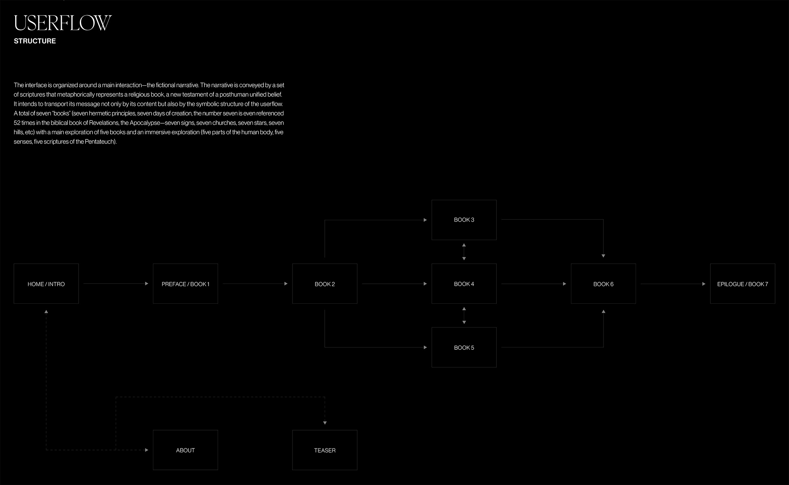
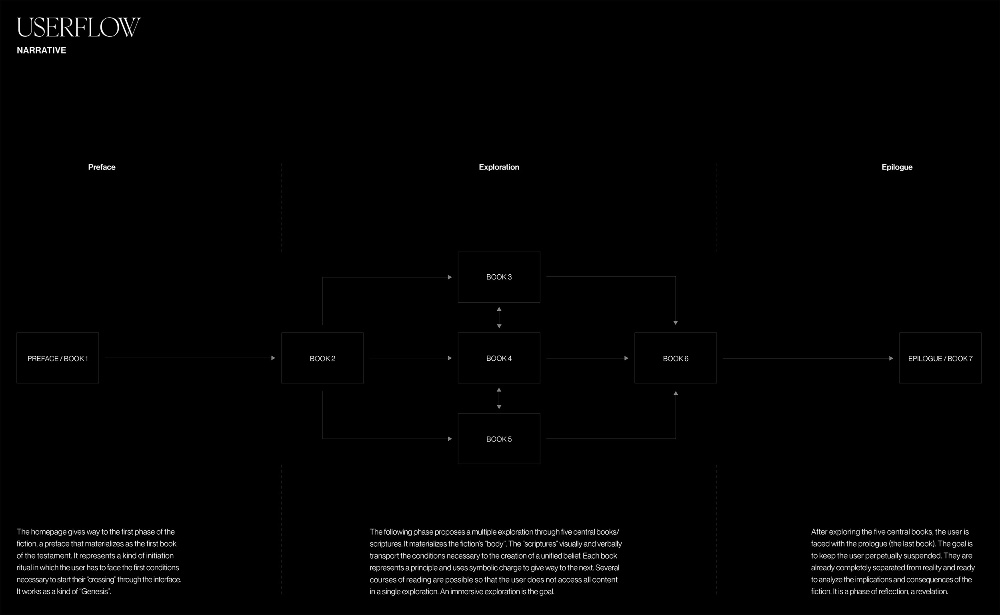
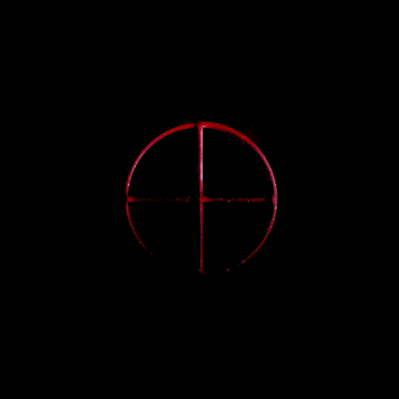
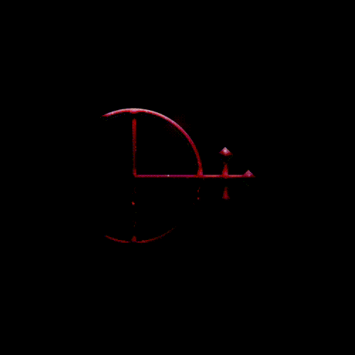

Creating a fiction was a way of placing participants in a less familiar environment and triggering some of their deepest perspectives. For this, I chose a topic that already implies a certain sensory immersion: religion. The aim was to reflect on how faith and belief (inherently human dimensions) can change over time. The narrative of the fiction (in the form of religious scripture) posed the possibility of a unified belief to reflect on organised religion, power, society and, ultimately, the nature of humanity itself.
All elements of the project were conceived according to a symbolic role, including the 7 chapters, which are all interconnected. The aim was to achieve a labyrinthine and cyclical navigation, so that the users find themselves immersed in the words, symbols and soundtrack, and discover a new part of the narrative with each session.
Besides the final prototype, I did an initial survey, developed personas, user journeys and user flows, and carried out user testing. A teaser was also created for advertising purposes. This project was featured in Dobra–11/Intervalo. (To read about the process in detail, check out the article here.)







